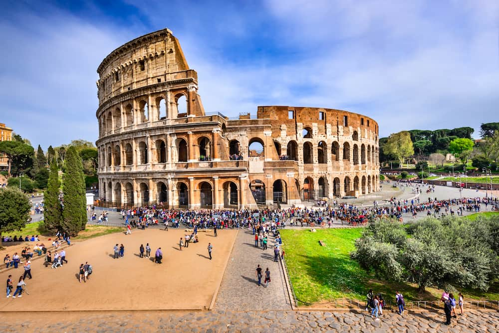

Coliseo Romano
El Coliseo Romano, es un testimonio imponente de la grandeza del Imperio Romano. Con su gran arquitectura y su fascinante historia de batallas y entretenimiento, además es un destino imprescindible para los amantes de la historia y la arqueología. Su importancia histórica, ofrece una experiencia inolvidable para todos los visitantes que deseen sumergirse en la grandiosidad del pasado romano.